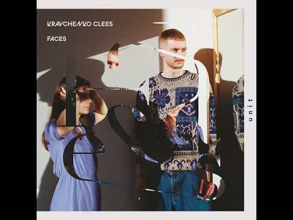
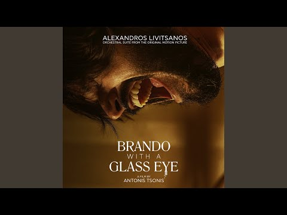
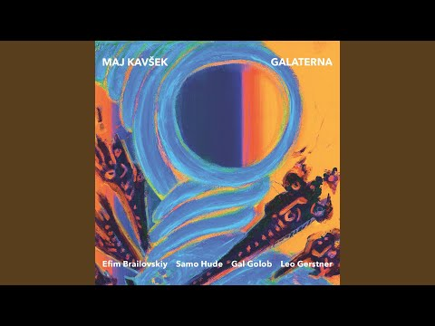
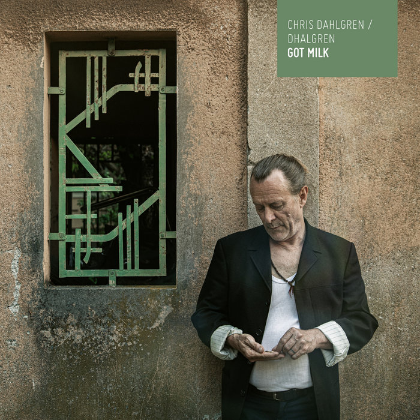
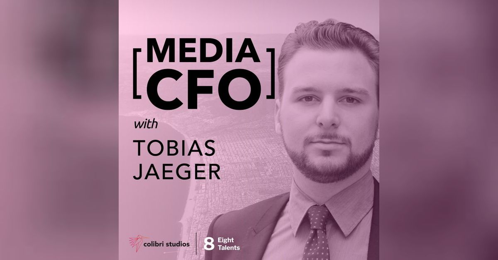
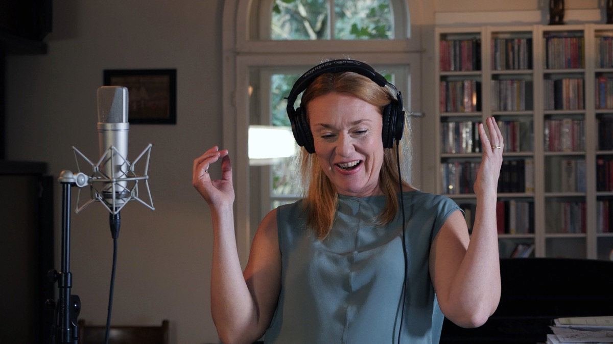
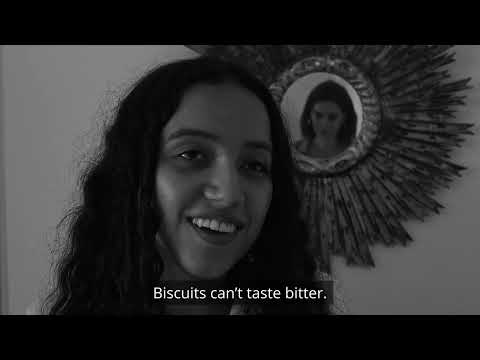
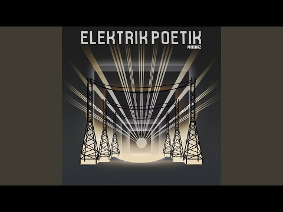

Selected Work / Credits
- Piano solo recordingWatch on YouTube
-

Church organ recordingWatch on YouTube -

Orchestra editWatch on YouTube -

Recording, post-production, mixing, and masteringWatch on YouTube -

Full production, including unreleased 3D mixes and mastersListen on Bandcamp -

Post-production, spectral cleaning, mixing, and masteringListen on Podbean -

Field and music recordingsView the film project -

Music score and performance, post-production, foley, mixing, and masteringWatch on YouTube -

Full production and electric bass overdubsWatch the YouTube playlist - Electric bass, recording, editing, and mixingListen on Spotify